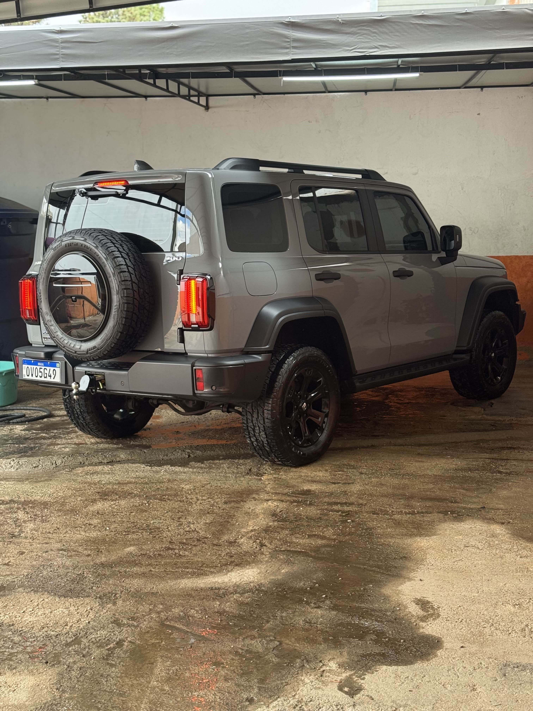
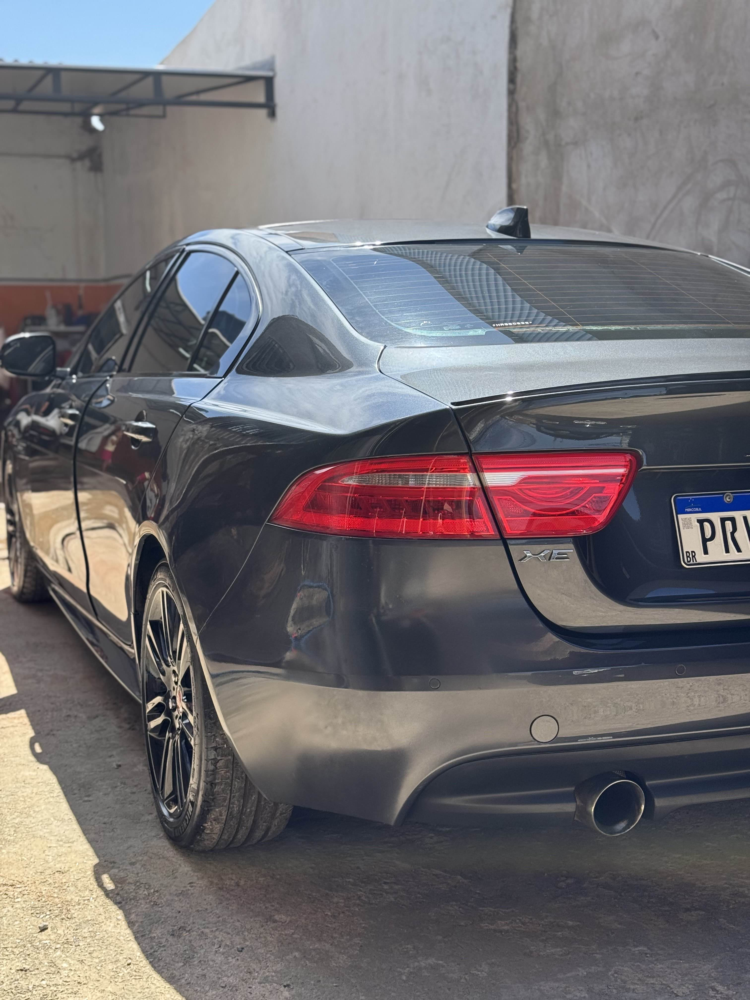
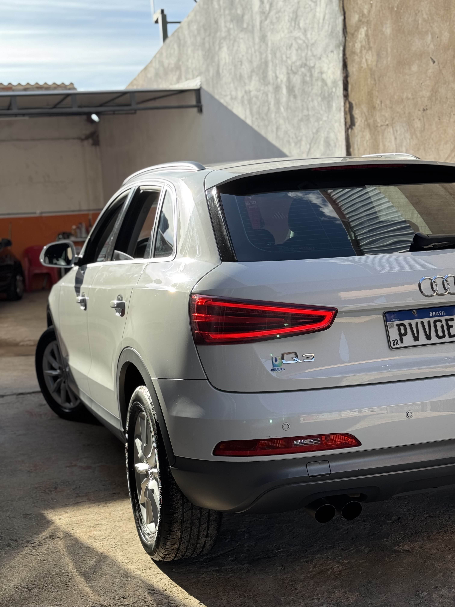

Alguns de Nossos Serviços
ㅤㅤㅤㅤㅤㅤㅤㅤㅤㅤㅤㅤㅤㅤㅤㅤㅤㅤ Este resultado ilustra o momento inicial da Lavagem Externa Premium. O veículo está sendo coberto por uma espuma densa, um processo minucioso que utiliza shampoos automotivos de alta qualidade com pH balanceado. Esta técnica é fundamental para remover totalmente sujeiras como poeira, lama, resíduos de chuva e poluição que se acumulam no dia a dia. Ao aplicar a espuma densa, garantimos que a sujeira seja amolecida e solta de forma eficiente e delicada, o que é crucial para preservar a pintura e o verniz original do carro, evitando qualquer microabrasão. A lavagem é feita com esponjas especiais e luvas de microfibra, garantindo que a pintura seja tratada com o máximo de cuidado antes de receber a secagem com toalhas apropriadas para um acabamento impecável.

ㅤㅤㅤㅤㅤㅤㅤㅤㅤㅤㅤㅤㅤㅤㅤㅤㅤㅤㅤㅤㅤㅤㅤㅤㅤ ㅤㅤㅤㅤㅤㅤㅤㅤㅤㅤㅤㅤㅤㅤㅤㅤㅤㅤㅤㅤㅤㅤㅤㅤㅤ ㅤㅤㅤㅤㅤㅤㅤㅤㅤㅤㅤㅤㅤㅤㅤㅤㅤㅤㅤㅤㅤㅤㅤㅤㅤ Esta imagem, mostrando o GWM Haval H6, destaca o resultado do Acabamento Profissional e Proteção Final. Após a limpeza completa, o foco se volta para os detalhes externos, onde são aplicados produtos que renovam e protegem os plásticos, borrachas e demais detalhes. O pneu estepe e as peças plásticas escuras recebem um tratamento que devolve o aspecto original sem deixá-los ressecados. Além da estética renovada, este serviço garante a durabilidade das peças e oferece praticidade na manutenção futura do veículo. O objetivo é que o carro fique protegido, bonito e com aparência de recém-detalhado por dias e semanas, valorizando o veículo como um todo.

ㅤㅤㅤㅤㅤㅤㅤㅤㅤㅤㅤㅤㅤㅤㅤㅤㅤㅤㅤㅤㅤㅤㅤㅤㅤ ㅤㅤㅤㅤㅤㅤㅤㅤㅤㅤㅤㅤㅤㅤㅤㅤㅤㅤㅤㅤㅤㅤㅤㅤㅤ ㅤㅤㅤㅤㅤㅤㅤ O brilho intenso e o reflexo limpo do Jaguar XE preto são o resultado da Descontaminação e Revitalização de Pintura. Com o tempo, a pintura acumula contaminantes invisíveis, como resíduos metálicos e poeira industrial. A descontaminação é o processo técnico que remove essas impurezas, deixando a superfície lisa e sedosa novamente. Em seguida, a revitalização, realizada com politriz e compostos específicos, devolve o brilho original ao carro. Este trabalho especializado reduz micro-riscos, ameniza marcas superficiais e corrige a aparência opaca da lataria, garantindo um brilho profundo e um reflexo limpo, o que aumenta o valor estético e comercial do veículo.

ㅤㅤㅤㅤㅤㅤㅤㅤㅤㅤㅤㅤㅤㅤㅤㅤㅤㅤㅤㅤㅤㅤㅤㅤㅤㅤㅤㅤㅤ ㅤㅤㅤㅤㅤㅤㅤㅤㅤㅤㅤㅤㅤㅤㅤㅤㅤㅤㅤㅤㅤㅤㅤㅤㅤㅤㅤㅤ O acabamento espelhado e o aspecto de carro novo do Audi Q3 são resultado da combinação da Lavagem Externa Premium com o Acabamento Profissional e Proteção Final. Após a limpeza minuciosa, a pintura recebe a aplicação de ceras líquidas ou selantes especiais. Estes produtos criam uma camada protetora invisível que aumenta a resistência da lataria contra sujeira, riscos leves e intempéries. O acabamento não apenas deixa a superfície do carro com reflexos intensos e mais brilhante, mas também facilita futuras lavagens, pois a sujeira tem menos aderência. Este é um serviço que oferece durabilidade e estética, mantendo seu veículo com o melhor visual por mais tempo. |